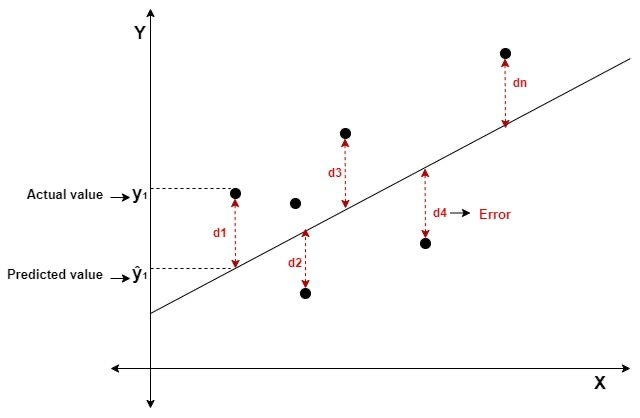
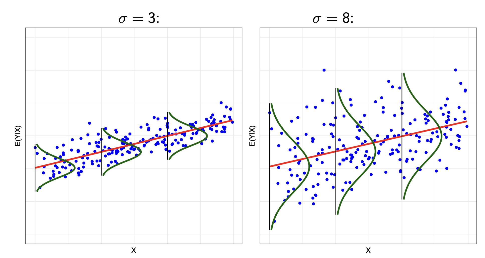
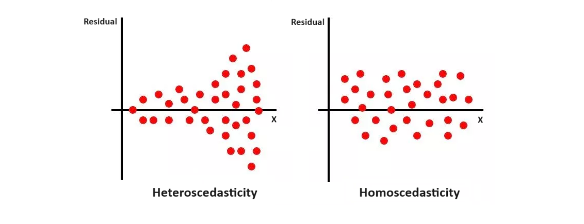
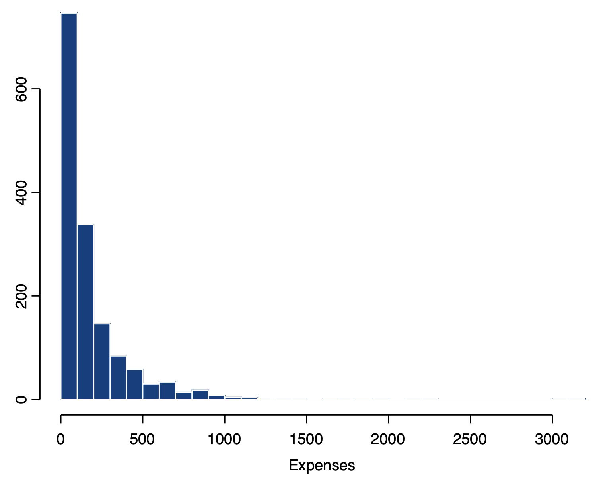
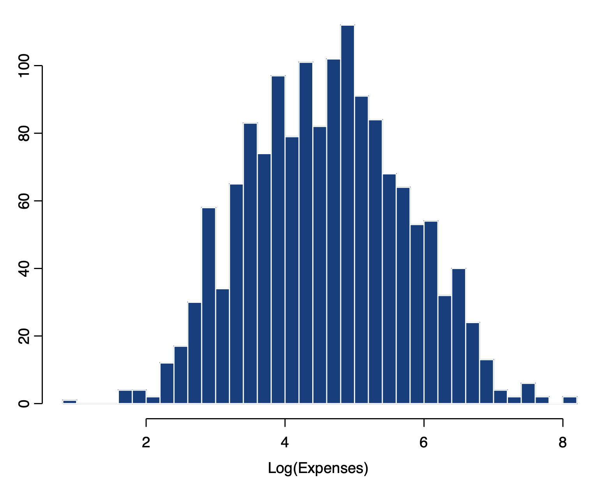

library(fixest)This chapter introduces multiple linear regression, the foundational model for all of statistics. We cover the specification of the model, estimation and statistical inference, as well as extensions.
Basics of the Model
Model Specification
Let us say we have some outcome variable y, and several explanatory variables x_1, x_2, \dots, x_k. We have data on n number of observations i = 1, \dots n.
The linear regression model can be written as a conditional expectation E(y|x) function:
E(y_i |x_i) = \beta_0 + \beta_1 x_{1i} + \dots + \beta_kx_{ki}
The linear model can also be specified for any specific outcome value y_i for unit i:
y_i = \beta_0 + \beta_1 x_{1i} + \dots + \beta_kx_{ki} + u_i
We can also specify the linear model in terms of linear algebra:
\begin{pmatrix}y_1 \\ y_2 \\ \vdots \\ y_n\end{pmatrix} = \begin{pmatrix}1 & x_{11} & \dots & x_{k1} \\1 & x_{12} & \dots & x_{k2} \\\vdots & \vdots & \vdots & \vdots \\1 & x_{1n} & \dots & x_{kn}\end{pmatrix} \begin{pmatrix}\beta_0 \\ \beta_1 \\ \vdots \\ \beta_k\end{pmatrix} + \begin{pmatrix}u_1 \\ u_2 \\ \vdots \\ u_n\end{pmatrix}
\mathbf y = \mathbf X \boldsymbol\beta + \mathbf u
More Info on Conditional Expectations
Imagine y is income, and x is age.
At age x=20, not every 20 year old makes the same amount of income. There is some distribution, with some making more, and some making less. This is the distribution y|x=20.
We can find the expected value of this distribution, E(y|x=20). This is a conditional expectation, and indicates the expected income of a 20 year old if we randomly chose one from the distribution.
At x=30, the E(y|x) probably is different (30 year olds make more money). Thus, the linear model is essentially stating that the expected y depends on x. Or in terms of this example, the expected income depends on the individual’s age.
More Info on the Error Term u_i
The u_i is called the error term. This indicates that not every value of y_i in our data will be exactly on the linear best-fit line.
Graphically, it is the highlighted part:

In social science terms, the u_i is the effect of any other variable not included in our model on y.
For example, if x is age, and y is income, we will have the following relationship:
\text{income}_i = \beta_0 + \beta_1 \text{age}_i + u_i
However, not every individual lies perfectly on this linear line. This is because there are other factors outside of age that affect y (income), and these other factors are bundled into the error term.
Estimation Process
To estimate the population parameters \beta_0, \dots, \beta_k, we use our sample data, and try to find the values \widehat{\beta_0}, \dots, \widehat{\beta_k} that minimise the square sum of residuals (SSR):
\begin{split} SSR & = \sum\limits_{i=1}^n(y_i - \hat y_i)^2 \\ & = \sum\limits_{i=1}^n(y_i - \widehat{\beta_0} - \widehat{\beta_1}x_{1i} - \dots - \widehat{\beta_k}x_{ki}) \end{split}
In the linear algebra representation (where \mathbf b is the vector of estimated parameters \widehat{\beta_0}, \dots, \widehat{\beta_k}):
\begin{split} SSR & = (\mathbf y - \mathbf{\hat y})^T(\mathbf y - \mathbf{\hat y}) \\ & = (\mathbf y - \mathbf{Xb})^T(\mathbf y - \mathbf{Xb}) \end{split}
Intuitive Visualisation of SSR
The residuals are the difference from our predicted best-fit line result \widehat{y_i}, and the actual value of y_i in the data. Below highlighted in red are the residuals.

After we have the residual values, we simply square each of them, then sum all of them together. That is the sum of squared residuals.
This estimation is called the ordinary least squares (OLS) estimator. The solutions to the OLS estimator can be derived mathematically.
Deriving OLS Estimates
Let us define our estimation vector \boldsymbol{\hat{\beta}} as the value of \boldsymbol{\hat{\beta}} that minimises the sum of squared errors:
\boldsymbol{\hat{\beta}} = \min\limits_{b} (\mathbf y - \mathbf{Xb})^T (\mathbf y - \mathbf{Xb}) = \min\limits_b S(\mathbf b)
We can expand S(\mathbf b) as follows:
\begin{split} S(\mathbf b) & = \mathbf y^T \mathbf y \color{red}{ - \mathbf b^T \mathbf X^T \mathbf y - \mathbf y^T \mathbf{Xb}} \color{black} + \mathbf b^T \mathbf X^T \mathbf{Xb} \\ & = \mathbf y^T \mathbf y \color{red}{- 2\mathbf b^T \mathbf X^T \mathbf y} \color{black} + \mathbf b^T \mathbf X^T \mathbf{Xb} \end{split}
Taking the partial derivative in respect to b:
\frac{\partial S(\mathbf b)}{\partial \mathbf b} = \begin{pmatrix}\frac{\partial S(\mathbf b)}{\partial b_1} \\\vdots \\\frac{\partial S(\mathbf b)}{\partial b_k}\end{pmatrix}
Differentiating with the vector b yields:
\frac{\partial S(\mathbf b)}{\partial b} = -2\mathbf X^T \mathbf y + 2 \mathbf X^T \mathbf{Xb}
Evaluated at \hat{\beta}, the derivatives should equal zero (since first order condition of finding minimums):
\frac{\partial S(\mathbf b)}{\partial b} \biggr|_{\hat{\beta}} = -2\mathbf X^T \mathbf y + 2\mathbf X^T \mathbf X \boldsymbol{\hat{\beta}} = 0
When assuming \mathbf X^T \mathbf X is invertable (which is true if \mathbf X is full rank), we can isolate \boldsymbol{\hat{\beta}} to find the solution to OLS:
\begin{split} -2\mathbf X^T\mathbf y + 2 \mathbf X^T \mathbf X \boldsymbol{\hat{\beta}} & = 0 \\ 2 \mathbf X^T \mathbf X \boldsymbol{\hat\beta} & = 2\mathbf X^T \mathbf y \\ \boldsymbol{\hat\beta} & = (2\mathbf X^T \mathbf X)^{-1} 2 \mathbf X^T \mathbf y \\ \boldsymbol{\hat\beta} & = (\mathbf X^T \mathbf X)^{-1} \mathbf X^T \mathbf y \end{split}
With the estimated parameters \widehat{\beta_0}, \dots, \widehat{\beta_k}, we now have a best-fit line, called the fitted values.
For more detailed analysis of the OLS estimator, see the causal inference section.
Interpretation
Interpretation of Parameters
I define \widehat{\beta_j} \in \{\widehat{\beta_1}, \dots, \widehat{\beta_k}\}, multiplied to x_j \in \{x_1, \dots, x_k\}. \widehat{\beta_0} is the intercept.
| Continuous x_j | Binary x_j | |
| Continuous y | For every one unit increase in x_j, there is an expected \widehat{\beta_j} unit change in y. When all explanatory variables equal 0, the expected value of y is \widehat{\beta_0}. |
There is a \widehat{\beta_j} unit difference in y between category x_j = 1 and category x_j = 0. For category x_j = 0, the expected value of y is \widehat{\beta_0} (when all other explanatory variables equal 0). |
| Binary y | For every one unit increase in x_j, there is an expected \widehat{\beta_j} \times 100 percentage point change in the probability of a unit being in category y=1. When all explanatory variables equal 0, the expected probability of a unit being in category y=1 is \widehat{\beta_0} \times 100 |
There is a \widehat{\beta_j}\times 100 percentage point difference in the probability of a unit being in category y=1 between category x_j = 1 and category x_j = 0. For category x_j = 0, the expected probability of a unit being in category y=1 is \widehat{\beta_0} \times 100 (when all other explanatory variables equal 0). |
If you have multiple explanatory variables, always add: while holding all other explanatory variables not x_j constant.
Standardised Interpretations
Sometimes, a \beta_j increase in y for every one unit increase in x is not particularly useful for us to interpret. For example, if y is democracy, what does a 5 unit increase in democracy actually mean?
We can add more relevant detail by expressing the change of y and x in terms of their standard deviations. Or in other words, we want to find the change in \frac{\hat y_i}{\sigma_y} for every one standard deviation \sigma_x increase in x. For simplicity, let us use a simple linear regression E(y_i|x_i) = \beta_0 + \beta_1 x_i:
\begin{split} & E \left(\frac{y_i}{\sigma_y} | x_i = x + \sigma_x \right ) - E \left(\frac{y_i}{\sigma_y} | x_i = x \right ) \\ & = \frac{E(y_i|x_i = x+ \sigma_x)}{\sigma_y} - \frac{E(y_i|x_i = x)}{\sigma_y} \\ & = \frac{E(y_i|x_i = x+ \sigma_x) - E(y_i|x_i = x)}{\sigma_y} \\ & = \frac{\beta_0 + \beta_1(x+\sigma_x) - [\beta_0 + \beta_1(x)]}{\sigma_y} \\ & = \frac{\beta_0 + \beta_1x + \beta_1\sigma_x - \beta_0 -\beta_1x}{\sigma_y} \\ & = \frac{\beta_1\sigma_x}{\sigma_y} \end{split}
Thus, for a one standard deviation \sigma_x increase in x_j, there is an expected \frac{\beta_j\sigma_x}{\sigma_y}-standard deviation change in y.
Residual Standard Deviation
Residuals are the distance of the actual value y_i of observation i, compared to the predicted \widehat{y_i} from our fitted values/best-fit line. They can be obtained after we fit our model:
\begin{split} \mathbf{\hat u} & = \mathbf y - \mathbf{\hat y} \\ & = \mathbf y - \mathbf X(\mathbf X^T \mathbf X)^{-1} \mathbf X^T \mathbf y \end{split}
The residual standard deviation \hat\sigma measures the spread/variance of our residuals - so, how far away the actual values y_i are from our predicted values \widehat{y_i} in general for all observations.
The residual variance is estimated with the formula below (with the residual standard deviation being the square root):
\hat\sigma^2 = \frac{\sum_{i=1}^n \hat u_i^2}{n-k-1} = \frac{\mathbf{\hat u}^T \mathbf{\hat u}}{n-k-1}
Visualisation of Residual Standard Deviation
Below is a figure illustrating different residual standard deviations, with the same best-fit line.

Smaller \hat\sigma mean the actual values are, on average, close to our predicted values, and larger \hat\sigma mean the actual values are, on average, further away from our predicted values.
R-Squared
R-Squared (R^2) measures the proportion of variation in y that is explained by our explanatory variables.
Mathematical Derivation of R-Squared
Let us define these three concepts: the total sum of squares (SST), explained sum of squares (SSE), and residual sum of squares (SSR):
\begin{split} & SST = \sum\limits_{i=1}^n (y_i - \bar y)^2 \\ & SSE = \sum\limits_{i=1}^n (\hat y_i - \bar y)^2 \\ & SSR = \sum\limits_{i=1}^n (\hat u_i)^2 \end{split}
- The SST explains the total amount of variation in y
- The SSE is the amount of variation in y explained by our model
- The SSR is the amount of variation in y not explained by our model
Let us look at the total sum of squares (SST). We can manipulate it as follows:
\begin{split} SST & = \sum\limits_{i=1}^n (y_i - \bar y)^2 \\ & = \sum\limits_{i=1}^n(y_i - \hat y_i+ \hat y_i - \bar y)^2 \\ & = \sum\limits_{i=1}^n((y_i - \hat y_i)+ \hat y_i - \bar y)^2 \\ & = \sum\limits_{i=1}^n[\hat u_i + \hat y_i - \bar y]^2 \\ & = \sum\limits_{i=1}^n[\hat u_i^2 + \hat u_i \hat y_i - \hat u_i \bar y + \hat y_i \hat u_i + \hat y_i^2 - \hat y_i \bar y-\bar y \hat u_i -\bar y \hat y_i+\hat y^2_i] \\ & = \sum\limits_{i=1}^n[ \hat u_i^2 + 2 \hat u_i \hat y_i+ \hat y_i^2 - 2 \hat u_i \bar y - 2 \hat y_i \bar y + \bar y ^2] \end{split}
By a property of linear regression, \sum \hat y_i \hat u_i = 0. Knowing this, we can further simplify to:
\begin{split} SST & = \sum\limits_{i=1}^n[ \hat u_i^2 + \hat y_i^2 - 2 \hat u_i \bar y - 2 \hat y_i \bar y + \bar y ^2] \\ & = \sum\limits_{i=1}^n[\hat u_i^2 + (\hat y_i - \bar y)^2]\\ & = \sum\limits_{i=1}^n \hat u_i^2 + \sum\limits_{i=1}^n(\hat y_i - \bar y)^2 \\ & = SSE + SSR \end{split}
This makes sense: After all, SSE is the squared errors explained by the model, and SSR is the residual (non-explained) parts of the model, so together, they should be equal to the total sum of squares.
Thus, R-squared should naturally be defined as:
R^2 = \frac{SSE}{SST} = \frac{1 - SSR}{SST}
R-Squared is always between 0 and 1 (or 0-100 as a percentage). Higher values indicate our model better explains the variation in y.
Interpreting R-squared: The Model explains R^2 \times 100 percent of the variation in y.
Statistical Inference
Homoscedasticity and Heteroscedasticity
Homoscedasticity is defined as:
Var(\mathbf u | \mathbf X) = \sigma^2 \mathbf I_n = \begin{pmatrix} \sigma^2 & 0 & \dots & 0 \\ 0 & \sigma^2 & \dots & 0 \\ \vdots & \vdots & \ddots & 0 \\ 0 & 0 & \dots & \sigma^2 \end{pmatrix}
Or in other words, no matter the values of any explanatory variable, the error term variance is constant.
If this is false, then we have heteroscedasticity.
Intuitive Visualisation of Homoscedasticity
An easy way to identify homoscedasticity is to look at a residual plot (just the plot of all \widehat{u_i}):

Notice how the homoscedasticity residuals seem to have the same up-down variance, no matter the value of x.
The heteroscedasticity residuals have a clear pattern - the up-down variance is smaller when x is smaller, and the up-down variance is larger when x is larger.
Essentially, if you see a pattern in the residual plot, it is likely heteroscedasticity.
If you have homoscedasticity, you should use normal OLS standard errors.
If you have heteroscedasticity, you should use robust OLS standard errors. You should also use robust standard errors if you are not sure which errors to use.
Deriving Standard Errors
We will only derive homoscedastic (normal) standard errors. The robust standard error derivation is beyond the scope of this lesson (just trust the computer that it will calculate it properly).
We want to find the variance of our estimator, Var(\boldsymbol{\hat\beta} | \mathbf X). Let us start off with our OLS solution. We can simplify as follows:
\begin{split} \boldsymbol{\hat\beta} & = (\mathbf X^T \mathbf X)^{-1} \mathbf X^T \mathbf y \\ & = (\mathbf X^T \mathbf X)^{-1} \mathbf X^T\underbrace{(\mathbf X \boldsymbol\beta + \mathbf u)}_{\text{plug in } \mathbf y} \\ & = \underbrace{(\mathbf X^T \mathbf X)^{-1} \mathbf X^T \mathbf X}_{\text{inverses cancel out }} \boldsymbol\beta + (\mathbf X^T \mathbf X)^{-1} \mathbf X^T \mathbf u \\ & = \boldsymbol\beta + (\mathbf X^T \mathbf X)^{-1} \mathbf X^T \mathbf u \\ \end{split}
Thus, we know:
Var(\boldsymbol{\hat\beta} | \mathbf X) = Var(\boldsymbol\beta + (\mathbf X^T \mathbf X)^{-1} \mathbf X^T \mathbf u \ | \ \mathbf X)
\boldsymbol\beta is a vector of fixed constants (the true parameter values in the population). (\mathbf X^T \mathbf X)^{-1} \mathbf X^T \mathbf u can be imagined as a matrix of fixed constants, since we are conditioning the above variance on \mathbf X (so for each \mathbf X, the statement is fixed).
Mathematical Lemma
If \mathbf u is an n dimensional vector of random variables, \mathbf c is an m dimensional vector, and \mathbf B is an n \times m dimensional matrix with fixed constants, then the following is true:
Var(\mathbf c + \mathbf{Bu}) = \mathbf B Var(\mathbf u)\mathbf B^T
I will not prove this lemma here, but it is provable.
With the Lemma above, and with the definition of homoscedasticity, we can simplify:
\begin{split} Var(\boldsymbol{\hat\beta} | \mathbf X) & = (\mathbf X^T \mathbf X)^{-1} \mathbf X^T Var(\mathbf u | \mathbf X) [(\mathbf X^T \mathbf X)^{-1} \mathbf X^T]^{-1} \\ & = (\mathbf X^T \mathbf X)^{-1} \mathbf X^T \underbrace{Var(\mathbf u | \mathbf X)}_{\text{homoscedastcity}} \mathbf X (\mathbf X^T \mathbf X)^{-1} \\ & = (\mathbf X^T \mathbf X)^{-1} \mathbf X^T \underbrace{\color{red}{\sigma^2}}_{\text{scalar}} \mathbf I_n \mathbf X (\mathbf X^T \mathbf X)^{-1} \\ & = \color{red}{\sigma^2} \color{black} (\mathbf X^T \mathbf X)^{-1} \mathbf X^T \mathbf I_n \mathbf X (\mathbf X^T \mathbf X)^{-1} \\ & = \sigma^2 (\mathbf X^T \mathbf X)^{-1} \underbrace{\mathbf X^T \mathbf X (\mathbf X^T \mathbf X)^{-1}}_{\text{inverses cancel out}} \\ & = \sigma^2 (\mathbf X^T \mathbf X)^{-1} \end{split}
However, we do not actually know what \sigma^2 is. We can estimate it with \hat\sigma^2 (discussed previously). The standard errors are the square root of the variance. Thus, our standard errors for any coefficient estimate \hat\beta_j are:
se(\hat\beta_j) = \hat\sigma \sqrt{(\mathbf X^T \mathbf X)^{-1}_{jj}}
T-Tests
In regression, our typical hypotheses are:
- H_0 : \beta_j = 0 (i.e. there is no relationship between x_j and y).
- H_1:\beta_j ≠ 0 (i.e. there is a relationship between x_j and y).
Using the standard error (see above), we calculate the t-statistic, and using the t-statistic, we calculate a p-value.
Details of Running a Hypothesis Test
First, we calculate the t-test statistic:
t = \frac{\widehat{\beta_1} - H_0}{\widehat{se}(\widehat{\beta_1})}
- Where H_0 is typically 0, but if you do decide to alter the null hypothesis, you would plug it in.
Now, we consult a t-distribution of n-k-1 degrees of freedom. We use a t-distribution because the standard error calculation used in OLS is slightly imprecise.
- Note: we can only do this step if we believe the central limit theorem is met (that our errors are asymptotically normal). We need a large enough sample size.
We start from the middle of the t-distribution, and move t-test-statstic number of standard deviations from both sides of the middle.
Then, we find the probability of getting a t-test statistic even further from the middle than the one we got. The area highlighted in the figure below showcases this. In the figure, the t-test statistic is 2.228.

The area highlighted, divided by the entire area under the curve, is the p-value.
The p-value we get is the probability of getting a test statistic equally or more extreme than the one we got, given the null hypothesis is true.
If p<0.05, we believe the probability of a null hypothesis is low enough, such that we reject the null hypothesis (that there is no relationship between x and y), and conclude our alternate hypothesis (that there is a relationship between x and y).
If p > 0.05, we cannot reject the null hypothesis, and cannot reject that there is no relationship between x and y.
NOTE: this is not causality - we are only looking at the relationship. Causality needs to be established with an adequate research design.
Confidence Intervals
The 95% confidence intervals of coefficients have the following bounds:
\widehat{\beta_j} - 1.96 \widehat{se}(\widehat{\beta_j}), \ \ \widehat{\beta_j} + 1.96 \widehat{se}(\widehat{\beta_j})
- The 1.96 is an approximation assuming a normal distribution. The actual confidence intervals (calculated by computers) will use a t-distribution of n-k-1, which will result in a slightly different multiplicative factor.
The confidence interval means that under repeated sampling and estimating \widehat{\beta_j}, 95% of the confidence intervals that we construct will include the true \beta_j value in the population.
If the confidence interval contains 0, we cannot conclude a relationship between x_j and y, as 0 is a plausible value of \beta_j. These results will always match those of the t-test.
F-Tests
F-tests are used to test more than one coefficient at a time. The hypotheses will be:
- M_0 : y = \beta_0 + \beta_1 x_1 + \dots + \beta_g x_g + u_i (the smaller null model).
- M_a : y = \beta_0 + \beta_1x_1 + \dots + \beta_g x_g + \dots + \beta_kx_k + u_i (the bigger model with additional variables).
Details of the F-test
F-tests compare the R^2 of the two models through the F-statistic:
F = \frac{(SSR_0 - SSR_a) / (k_a - k_0)}{SSR_a /(n - k_a - 1)}
We then consult a F-distribution with k_a - k_0 and n-k_a - 1 degrees of freedom, obtaining a p-value (in the same way as the t-test).
The p-value we get is the probability of getting a test statistic equally or more extreme than the one we got, given the null hypothesis is true.
- If p<0.05, the we believe the probability of the null hypothesis is low enough, such that we reject the null hypothesis (that M_0 is the better model), and conclude our alternate hypothesis (that M_a is a better model). This also means the extra coefficients in M_a are jointly statistically significant.
- If p > 0.05, we cannot reject the null hypothesis, and cannot reject that M_0 is a better model. Thus, the extra coefficients in M_a are jointly not statistically significant.
Predictive Inference
We can predict using the linear regression by plugging in explanatory variable values, and finding the predicted \widehat{y_i}.
\begin{split} \mathbf{\hat y} & = \mathbf X \boldsymbol{\hat\beta} \\ & = \mathbf X(\mathbf X^T \mathbf X)^{-1}\mathbf X^t \mathbf y \end{split}
We also have confidence intervals for every predicted \widehat{y_i}. These intervals are calculated with the residual standard deviation (covered previously):
\widehat{y_i} - 1.96 \hat\sigma, \ \widehat{y_i} + 1.96 \hat\sigma
Extensions
Categorical Explanatory Variables
Take an explanatory variable x, which has n number of categories 1, \dots, n. To include x in our regression, we would create n-1 dummy variables, to create the following regression model:
E(y_i|x_i) = \beta_0 + \beta_1x_{1i} + \dots + \beta_k x_{n-1 \ i}
- Categories 1, \dots, n-1 get there own binary variable x_1, \dots, x_{n-1}.
- Category n (the reference category) does not get its own variable. We can change which category we wish to be the reference.
Interpretation is as follows (category j is any one of category 1, \dots, n-1).
- \beta_j is the difference in expected y between category j and the reference category.
- \beta_0 is the expected y of the reference category.
- Thus, category j has an expected y of \beta_0 + \beta_j.
Example of a Categorical Explanatory Variable
Let us say that x is the variable development level of a country, with 3 categories: low (L), medium (M), and high (H). y will be the crime rate of the country.
Let us set low development (L) as our reference category. Our regression will be:
E(y|x) = \beta_0 + \beta_1x_M + \beta_2 x_H
Now let us interpret the coefficients:
- \beta_0 is the expected crime rate for a country of low (L) development.
- \beta_1 is the difference in expected crime rate between a medium (M) developed country and a low (L) developed country (since low is the reference category).
- \beta_2 is the difference in expected crime rate between a high (H) developed country and a low (L) developed country (since low is the reference category).
The expected/predicted y (crime rate) for each category is:
- Low (L): \beta_0
- Medium (M): \beta_0 + \beta_1
- High (H): \beta_0 + \beta_2.
Each coefficient \beta_j’s statistical significance is a difference-in-means significance test, not the significance of the categorical variable as a whole. To find if the entire categorical variable is significant, you should use a F-test.
Fixed Effects
When we have hierarchical or panel data, we need to control for differences between clusters. We essentially include the cluster variable as a categorical variable in our regression.
Hierarchical/Clustered Data
Hierarchical data is data where the basic units of analysis i are clustered, grouped, or nested into clusters.
For example, let us say we are measuring how income affects voter turnout in european countries. We have observations from France, Switzerland, Germany, and many other countries. However, these observations can be grouped by the country they came from.
Why is this grouping important? This is because there may be something in common between observations within the same cluster. For example, Switzerland might just have higher voter turnout in general due to something about Swiss institutions or culture.
This means that observations aren’t random - i.e. we know that if we select from switzerland, it is likely to have higher turnout - observations from the same country are correlated. Thus, we need some way to account for this clustering of observations. We will explore this below.
Panel Data
Panel data is data that can be clustered in two ways - by unit, and by time. For example, let us say we have a dataset on all countries and their GDP between 1960-2020.
- We will have clusters based on country: Germany will have an observation in 1960, in 1961, …, to 2020. Same for every other country. These observations are grouped by the unit (country in this case).
- We will also have clusters based on time: We will have all GDP observations for all countries in 1960, in 1961, etc. These observations are grouped by the time (year in this case).
Let us say we have m number of clusters i = 1, \dots, m. Within each cluster, we will have units t = 1, \dots, n. Our cluster fixed effects model will take the form:
\begin{split} y_{it} & = \alpha_i + \beta_1x_1 + \dots + \beta_kx_k + u_{it} \\ & \text{where } \alpha_i = \beta_{00} + \underbrace{\beta_{02}D_{i2} + \beta_{03}D_{i3} + \dots + \beta_{0m}D_{im}}_{\text{unique intercepts for each cluster } 2, \dots, m} \end{split}
- Where D_{i2}, D_{i3}, \dots, D_{im} are dummy variables for clusters 2, \dots, m. Cluster 1 is the reference category.
- y_{it} indicates the y value of the tth individual in the ith cluster.
For panel data, we use two-way fixed effects, which is basically just two fixed effects for different clustering. Let us say we have i = 1, \dots, m units with t = 1, \dots, n different numbers of time periods. Our two way fixed effects model takes the form:
\begin{split} y_{it} & = \alpha_i + \gamma_t + \beta_1x_1 + \dots + \beta_kx_k + u_{it} \\ & \text{where } \alpha_i = \alpha_{00} + \underbrace{\alpha_{02}D_{i2} + \alpha_{03}D_{i3} + \dots + \alpha_{0m}D_{im}}_{\text{unique intercepts for each unit } 2, \dots, m} \\ & \text{where } \gamma_t = \gamma_{00} + \underbrace{\gamma_{02}T_{i2} + \gamma_{03}D_{t3} + \dots + \gamma_{0n}T_{in}}_{\text{unique intercepts for each time }2, \dots, n} \\ \end{split}
- Where D_{i2}, D_{i3}, \dots, D_{im} are dummy variables for units 2, \dots, m., and T_{i2}, T_{i3}, \dots, T_{in} are dummy variables for time periods 2, \dots, n.
- y_{it} indicates the observation of unit i in time period t.
Intuitive Explanation of Fixed Effects
For one-way fixed effects, we essentially add a unique intercept term for every cluster, accounting for the average differences in y between each category.
- \beta_{00} is the intercept for the reference category 1.
- \beta_{00} + \beta_{0i} is the intercept for the ith category.
For two-way fixed effects, we add a unique intercept term for every year and country, accounting for the average differences in y between each country, and the average differences in y between each year.
Interaction Effects
An interaction between two variables means they are multiplied in the regression equation:
y_i = \beta_0 + \beta_1x_{1i} + \beta_2x_{2i} + \beta_3 x_{1i} x_{2i}
Interpretation of the relationship between x_1 and y is as follows:
| Binary x_2 | Continuous x_2 | |
| Binary x_1 | When x_2 = 0, the effect of x_1 (going from 0 to 1) on y is \widehat{\beta_1}. When x_2 = 1, the effect of x_1 (going from 0 to 1) on y is \widehat{\beta_1} + \widehat{ \beta_3}. |
The effect of x_1 (going from 0 to 1) on y is \widehat{\beta_1} + \widehat{\beta_3} x_2. |
| Continuous x_1 | When x_2 = 0, for every increase in one unit of x_1, there is an expected \widehat{\beta_1} unit change in y. When x_2 = 1, for every increase in one unit of x_1, there is an expected \widehat{\beta_1}+ \widehat{\beta_3} change in y. |
For every increase of one unit in x_1, there is an expected \widehat{\beta_1} + \widehat{\beta_3} x_2 change in y. |
Proof of Interpretations of Interactions
We can solve for the change of x_1 on y using a partial derivative of y in respect to x_1:
\begin{split} \frac{\partial \widehat{y_i}}{\partial x_{1i}} & = \frac{\partial}{\partial x_{1i}} \left[ \widehat{\beta_0} + \widehat{\beta_1}x_{1i} + \widehat{\beta_2}x_{2i} + \widehat{\beta_3}x_{1i}x_{2i}\right] \\ \frac{\partial \widehat{y_i}}{\partial x_{1i}} & = \widehat{\beta_1} + \widehat{\beta_3}x_2 \end{split}
This gives us the effect of x_1 on y.
\widehat{\beta_0} is still the expected y when all explanatory variables equal 0.
The coefficient of the interaction \widehat{\beta_3}, when statistically significant, indicates a statistically significant interaction effect. If it is not statistically significant, then the interaction effect is not statistically significant (and can be dropped).
Polynomial Transformations
Sometimes the relationship between two variables is not a straight line - we can add more flexibility with polynomials. The most common form of polynomial transformation is the quadratic transformation:
y_i = \beta_0 + \beta_1x_{i} + \beta_2 x_{i}^2 + u_i
Our estimated \widehat{\beta_0} remains the expected value of y when all explanatory variables equal 0.
Unfortunately, the \widehat{\beta_1} and \widehat{\beta_2} coefficients are not directly interpretable.
- \widehat{\beta_2}’s sign can tell us if the best-fit parabola opens upward or downward.
- The significance of \widehat{\beta_2} also indicates if the quadratic term is statistically significant. If it is not, we can remove the transformation.
We can interpret two things about the quadratic transformation:
- For every one unit increase in x, there is an expected \widehat{\beta_1} + 2 \widehat{\beta_2}x unit increase in y.
- The minimum/maximum point in the best-fit parabola occurs at x_i = - \widehat{\beta_1}/2 \widehat{\beta_2}
Proof of Polynomial Interpretations
We can derive the change in y given a one unit increase in x by finding the partial derivative of y in respect to x:
\begin{split} \frac{\partial \widehat{y_i}}{\partial x} & = \frac{\partial}{\partial x} \left[ \widehat{\beta_0} + \widehat{\beta_1}x_i + \widehat{\beta_2}x_i^2 \right] \\ \frac{\partial \widehat{y_i}}{\partial x} & = \widehat{\beta_1} + 2 \widehat{\beta_2}x_i \end{split}
We can also solve for the x_i that results in the minimum/maximum of the best-fit parabola by setting the partial derivative equal to 0:
\begin{split} 0 & = \widehat{\beta_1} + 2 \widehat{\beta_2}x_i \\ x_i & = -\widehat{\beta_1}/2 \widehat{\beta_2} \end{split}
We can go beyond quadratic - as long as we always include lower degree terms in our model:
- Cubic: y_i = \beta_0 + \beta_1x_{i} + \beta_2 x_{i}^2 + \beta_3 x_i^3 + u_i
- Quartic: y_i = \beta_0 + \beta_1x_{i} + \beta_2 x_{i}^2 + \beta_3 x_i^3 + \beta_4 x_i^4 + u_i
Logarithmic Transformations
Logarithmic transformations are often used to change skewed variables into normally distributed variables.
Logging a Skewed Variable
Many monetary variables are heavily skewed. Natural logging these variables can turn them into normal distributions. This is useful, since skewed variables tend to have heteroscedasticity, and by making them normal, we can use the smaller normal standard errors.
For example, take this variable called expenses with a significant right skew:

If we take the log of this variable, we get the following distribution that is almost normal:

We have 3 types of logarithmic transformations:
| x | \log (x) | |
| y | Linear Model: y = \beta_0 + \beta_1 x + u |
Linear-Log Model: y = \beta_0 + \beta_1 \log x + u |
| \log (y) | Log-Linear Model: \log(y) = \beta_0 + \beta_1 x + u |
Log-Log Model: \log y = \beta_0 + \beta_1 \log x + u |
Interpreting the models:
| x | \log (x) | |
| y | Linear Model: When x increases by one unit, there is an expected \widehat{\beta_1} unit change in y. |
Linear-Log Model: When x increases by 10%, there is an expected 0.096 \widehat{\beta_1} unit change in y. |
| \log (y) | Log-Linear Model: For every one unit increase in x, y is multiplied by e^{\widehat{\beta_1}}. |
Log-Log Model: Multiplying x by e will multiply the expected value of y by e^{\widehat{\beta_1}}. |
Proof of Interpretations for Log Transformations
Proof of Linear-Log Model:
\begin{split} & E(y_i|x_i = x) = \beta_0 + \beta_1 \log x \\ & E(y_i | x_i = e^A x) = \beta_0 + \beta_1 \log(e^A x) \\ & = \beta_0 + \beta_1 (\log(e^A) + \log x) \\ & = \beta_0 + \beta_1 (A + \log x) \\ & = \beta_0 + \beta_1A + \beta_1 \log x \end{split}
\begin{split} E(y_i|x_i = \alpha x) - E(y_i|x_i = x) & = \beta_0 + \beta_1 A + \beta_1 \log (x) - (\beta_0 + \beta_1 \log x) \\ & = \beta_1 A \end{split}
- When A = 0.095, then e^A = 1.1. Thus, a 1.1 times increase of x results in a 0.095 \widehat{\beta_1} change in y.
Proof of Log-Linear Model:
\begin{split} E(\log y_i | x_i = x) = \log y_i & = \beta_0 + \beta_1 x \\ y_i & = e^{\beta_0 + \beta_1 x} \\ y_i & = e^{\beta_0}e^{\beta_1 x} \\ E(\log y_i|x_i = x+1) = \log y_i & = \beta_0 + \beta_1(x+1) \\ y_i & = e^{\beta_0 + \beta_1 + \beta_1 x} \\ y_i & = e^{\beta_0}e^{\beta_1}e^{\beta_1x} \end{split}
\begin{split} \frac{E(\log y_i|x_i = x+1)}{E(\log y_i | x_i = x)} & = \frac{e^{\beta_0}e^{\beta_1}e^{\beta_1x}}{e^{\beta_0}e^{\beta_1x}} \\ & = e^{\beta_1} \end{split}
- Thus, when x increases by one, there is a multiplicative increase of e^{\beta_1}.
Proof of Log-Log model:
\begin{split} E(\log y_i | x_i = x) = \log y_i & = \beta_0 + \beta_1 \log x \\ y_i & = e^{\beta_0 + \beta_1 \log x} \\ y_i & = e^{\beta_0}e^{\beta_1 \log x} \\ E(\log y_i|x_i = ex) = \log y_i & = \beta_0 + \beta_1 \log (ex) \\ y_i & = e^{\beta_0 + \beta_1 \log e + \beta_1 \log x} \\ y_i & = e^{\beta_0}e^{\beta_1}e^{\beta_1 \log x} \end{split}
\begin{split} \frac{E(\log y_i|x_i = ex)}{E(\log y_i | x_i = x)} & = \frac{e^{\beta_0}e^{\beta_1}e^{\beta_1 \log x}}{e^{\beta_0}e^{\beta_1 \log x}} \\ & = e^{\beta_1} \end{split}
- Thus, when x is multiplied by e, there is a multiplicative increase of e^{\beta_1}.
Implementation in R
You will need package fixest.
Regression with normal standard errors can be done with the lm() function:
model <- lm(y ~ x1 + x2 + x3, data = mydata)
summary(model)Regression with robust standard errors can be done with the feols() function:
model <- feols(y ~ x1 + x2 + x3, data = mydata, se = "hetero")
summary(model)Output will include coefficients, standard errors, p-values, and more.
Binary and Categorical Variables
You can include binary and categorical variables by using the as.factor() function:
feols(y ~ x1 + as.factor(x2) + x3, data = mydata, se = "hetero")You can do the same for y or x. Just remember, y cannot be a categorical variable (use multinomial logsitic regression instead).
Fixed Effects
You can include one-way fixed effects by adding a | after your regression formula in feols():
model <- feols(y ~ x1 + x2 + x3 | cluster,
data = mydata, se = "hetero")
summary(model)You can add two-way fixed effects as follows:
model <- feols(y ~ x1 + x2 + x3 | unit + year,
data = mydata, se = "hetero")
summary(model)
Interaction Effects
Two interact two variables, use * between them. This will automatically include both the interaction term, and the two variables by themselves.
feols(y ~ x1 + x2*x3, data = mydata, se = "hetero")If for some reason, you only want the interaction term, but not the variables by themselves, you can use a colon : between the two variables:
feols(y ~ x1 + x2:x3, data = mydata, se = "hetero")
Polynomial Transformations
To conduct a polynomial transformation, you can use the I() function. The second argument is the degree of the polynomial:
feols(y ~ x1 + I(x2, 3), data = mydata, se = "hetero") #cubic for x2
Logarithmic Transformations
The best way to do a logarithmic transformation is to create a new variable that is the log of the variable you want to transform using the log() function, before you even start the regression:
mydata$x1_log <- log(mydata$x1)
Confidence Intervals
To find the confidence intervals for coefficients, first estimate the model with lm() or feols() as shown previously, then use the confint() command:
confint(model)
F-Tests
To run a f-test, use the anova() command, and input your two different models, with the null model going first.
anova(model1, model2)Note: F-tests only work with models that are run with homoscedastic standard errors. Robust standard errors will not work.
LaTeX Regression Tables
You can use the texreg package to make nice regression tables automatically.
library(texreg)The syntax for texreg() is as follows:
texreg(l = list(model1, model2, model3),
custom.model.names = c("model 1", "model 2", "model 3"),
custom.coef.names = c("intercept", "x1", "x2"),
digits = 3)You can replace texreg() with screenreg() if you want a nicer regression table in the R-console.
Note: you must have the same amount of model names as total models in your texreg, and you must have the same amount of coeficient names as the total amount of coefficients in all of your models.
Prediction
We can use the predict() function to generate fitted value predictions in R:
my_predictions <- predict(model, newdata = my_new_data)my_new_data is a dataframe with a bunch of explanatory variable values (for every explanatory variable) for a collection of observations, that you wish to predict \hat y for.